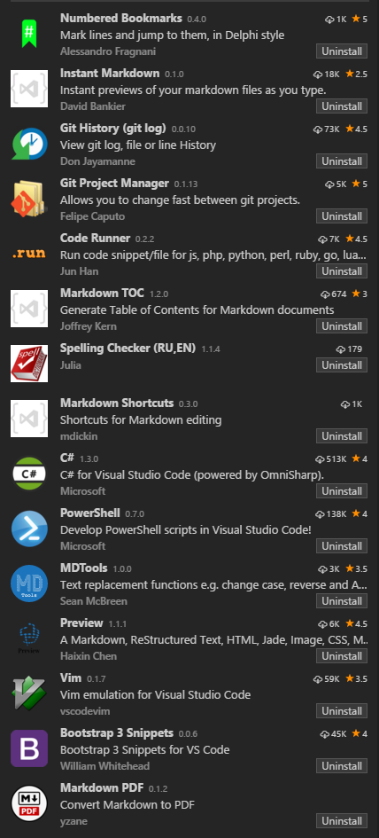

## Visual Studio Code
[Visual Studio Code][1] is awesome.
There are [many extensions][2].
Below is a screen capture of my current preferences for VsCode extensions:

[1]: https://code.visualstudio.com
[2]: https://marketplace.visualstudio.com/vscode/All%20categories?sortBy=Downloads